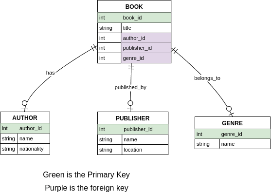

PDF Version Available
This document is also available in PDF format: week4schema.pdf
The PDF version includes bookmarks for easy navigation and is optimized for printing.
Accessibility Notice
This document is also available in HTML format at:
Link: https://aholdengouveia.name/AdvData/labs/week4schema.html
The HTML version provides enhanced accessibility features including keyboard navigation, screen reader support, responsive design, dark mode support, and high contrast options.
Request
Request: DATA-6243
Requested by: Head of the data team
Data: Your data set from the Introduction to Data lab
Background
Your data is mostly in one big table right now, which makes it hard to keep accurate as it grows. Before the team builds a proper database, your manager wants a design to review: what tables you need, how they connect, and the rules the data must follow. A design that's checked on paper is much cheaper to fix than one that's already built.
Learning Outcomes
By the end of this lab, you will be able to:
- Compare database design options, and choose one that fits your data set
- Create a database schema with tables, labeled primary and foreign keys, and rules for the data
- Map every column in a data set to a table, and check that the design supports your business questions
- Suggest ways to reduce repeated data in a data set before a design is built
Lab Instructions
Use the data set you chose in the Introduction to Data lab. Books are my example data only, so your design must be for your own data set.
If you want to switch to a different data set, email me first. Switching means redoing the work from earlier labs for your new data set, so it adds a lot of work. The switching checklist (linked under Resources) lists what you'd need to redo.
Part 1: Decide on a Design
- The topic page lists 6 schema design options: flat, hierarchical, network, relational, star, and snowflake. Pick 3 to evaluate.
- For each one, give 2 pros and 2 cons for your data specifically.
- Pick the one you think fits your data best, and explain why in one paragraph or less.
Part 2: Plan Your Tables
- List the tables you think you need, with a primary key for each one. For example, books might have tables for books, authors, publishers, and formats.
- Explain how the tables relate to each other, and list the foreign keys. If you have no foreign keys, explain why not.
- Make a column map: list every column in your data set, the table it goes in, and whether it's a primary key, a foreign key, or neither. Every column must appear. If you would leave a column out of the database, say why. For example, in my data the title column goes in the books table, and the author column becomes an authors table, with an author ID in the books table as a foreign key.
- Write at least 3 rules for your data, based on the quality notes on your data card. For example: title can't be missing, price can be missing, and rating must be between 0 and 5.
- Give at least 2 suggestions for reducing repeated data. Look for values that repeat on many rows, or columns that store a list of things in one cell. For example, in the original version of my data, the genres column stores lists like “Fantasy, Young Adult, Fiction”, so one suggestion is a separate genres table. You don't need to build these yet. You'll decide which ones to use when you load your data in the Beyond SQL lab.
- For each of your 5 business questions from the SQL Review lab, list which tables a query would need to answer it. If a question needs data your design doesn't have, update your design.
Part 3: Create Your Schema
You can use any diagram tool you like. I used diagrams.net (linked under Resources), which is free and runs in your browser. Your schema needs:
- At least 4 tables
- A labeled primary key in each table
- Labeled foreign keys, if you have them
- Your rules from Part 2, on the diagram or listed beside it
- A legend that explains any symbols or line types you used
- Your name and the term
Make your schema in two drafts, the way a design gets reviewed at work. Make a first draft, then check it against your column map, rules, and business question check from Part 2, and make a final draft that fixes anything you find. Include both drafts, and explain what you changed between them and why.
My schema examples (linked under Resources) give you an idea of what to create. Don't copy them, or feel you have to use the same design. My examples are kept small, so yours should have more tables, a legend, and your rules.

Acceptance Criteria
This request is done when:
- 3 design options are compared with pros and cons for your data, and your choice is explained
- Every column in your data set appears in your column map
- Your schema has at least 4 tables, each with a labeled primary key, and any foreign keys are labeled
- At least 3 rules, based on your data card
- At least 2 suggestions for reducing repeated data
- Each of your 5 business questions can be answered with your design
- Your schema image has a legend, and your name and the term
- Both drafts of your schema are included, with an explanation of what changed between them and why
Deliverables
One file that includes:
- If you switched data sets: the redone work from the switching checklist
- Part 1: your 3 design options with pros and cons, and your choice
- Part 2: your tables, relationships, column map, rules, suggestions for reducing repeated data, and business question check
- Part 3: both drafts of your schema, and your explanation of what changed
Audience: the head of the data team, who will approve your design.
Resources
References, a video, a PowerPoint and some notes are available at my website Link: https://www.aholdengouveia.name/AdvData/databaseschema.html
diagrams.net, a free diagram tool Link: https://app.diagrams.net/
Schema examples Link: https://www.aholdengouveia.name/AdvData/labs/cis210schemaexampleV1.png

Link: https://www.aholdengouveia.name/AdvData/labs/cis210schemaexampleV2.png

Switching checklist, if you want to change data sets Link: https://www.aholdengouveia.name/AdvData/labs/SwitchingDataSets.txt